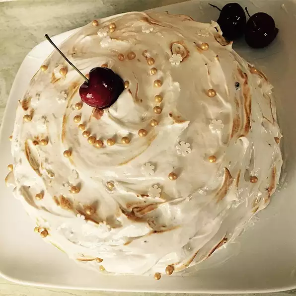

Lady Cake

Description
This cake is a real beauty covered with soft icing. You may substitute
sherry for vanilla if you choose.
Ingredients
- 1 cup butter, softened
- 1 ¼ cups white sugar
- 1 ½ teaspoons vanilla extract
- 3 cups all-purpose flour
- 1 tablespoon baking powder
Directions
-
Preheat oven to 350 degrees F (175 degrees C). Grease and flour three 9
inch round layer pans.
-
In a large bowl, cream butter or margarine, 1 1/4 cups sugar and 1 1/2
teaspoons vanilla together well. Beat until light and fluffy.
-
Stir flour, baking powder, and salt together in another bowl. Add flour
mixture to butter mixture in 3 parts alternating with milk in 2 parts,
beginning and ending with flour.
Ir aHome